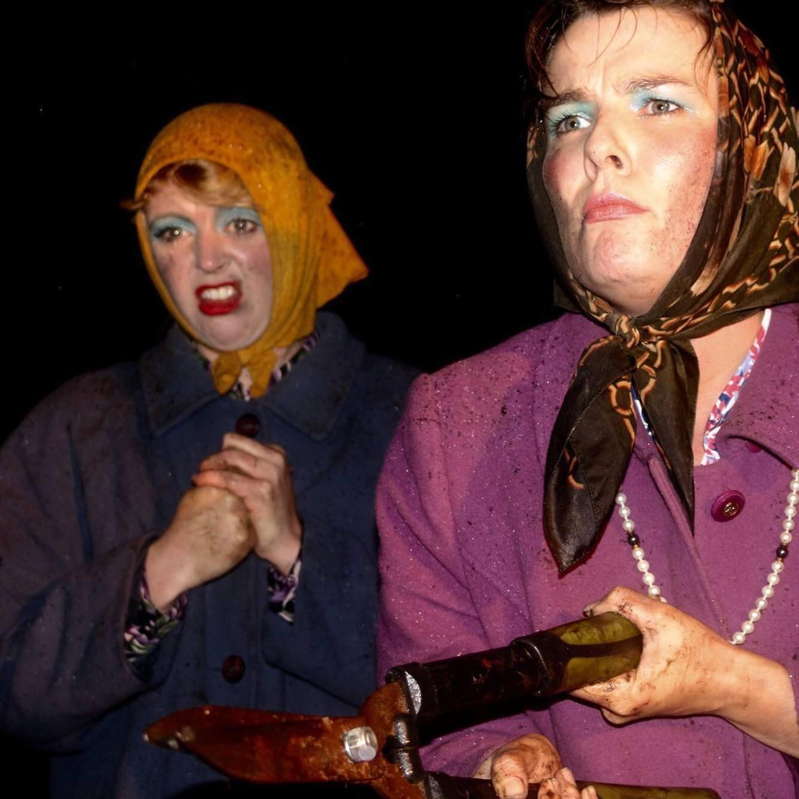

The Flowerpot Women
Funded by the Liverpool Culture Without Walls Fund (2020) Performed at Bluecoat Garden devised in collaboration with Izzie Major and Jonathan McGuire. First developed in collaboration with On The Verge Festival 2015
Flowerpot women a dark absurd comedy described as "Becket mixed with french and Saunders on acid’ about the pitfalls of Eddie and Garlands time in the garden together. A charming absurd piece about friendship, fauna and “getting on”